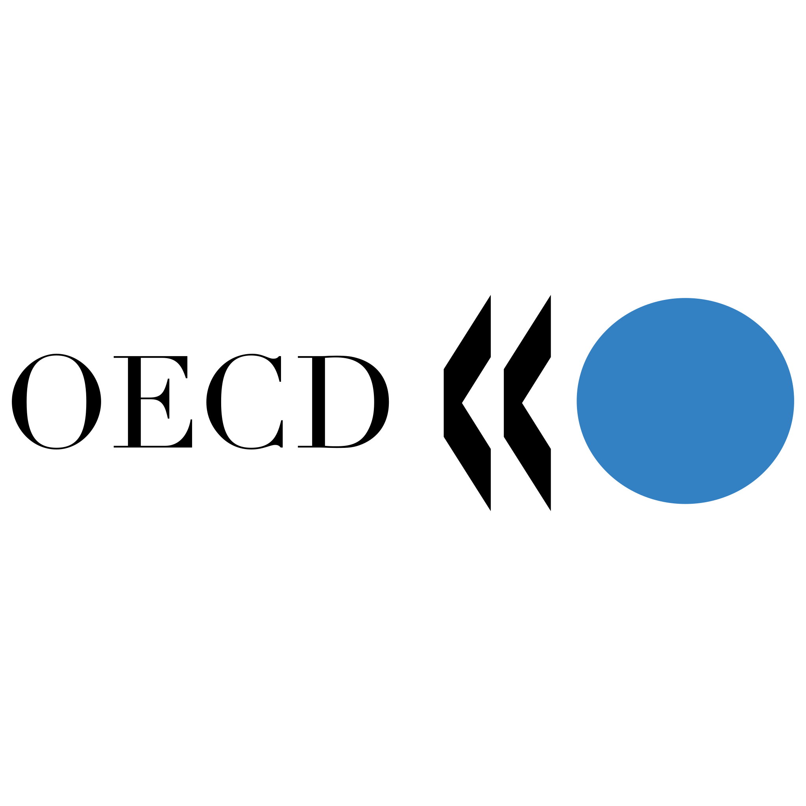

PhD Candidate · Economics
Giovanni Borraccia
I am a PhD candidate in Economics at the Geneva Graduate Institute (IHEID) and currently a PhD Summer Research Intern in the IMF Statistics Department. I was recently a Visiting PhD Fellow at UC Berkeley. My research focus is in behavioral macroeconomics, inflation expectations, information frictions, and monetary policy transmission.
On the 2026–2027 economics job market — happy to connect.
About
I study how households form beliefs about the economy — particularly about inflation — and how the information they hold, and the frictions that shape it, feed back into their financial decisions. My dissertation brings together three papers at the intersection of household finance, expectation formation, and information frictions.
Alongside my doctoral work I remain closely engaged with policy institutions: I am currently a PhD Summer Research Intern in the Statistics Department of the International Monetary Fund (IMF). Earlier, I spent several years as a research analyst in the European Department of the IMF, in the Prospects Group of the World Bank, in DG-Economics at the European Central Bank, and in the Regulatory Policy Division of the OECD. This work grounds my research in the questions that policymakers actually face.
I hold an MSc in the Political Economy of Europe from the London School of Economics (LSE) and a BSc (Hons) in Economics from University College London (UCL).
Research
Job Market Paper Stock Ownership and Inflation Expectations: Evidence from the 2021–2025 Inflation Surge
Does stock ownership shape how households form inflation expectations? Using the University of Michigan Survey of Consumers and a difference-in-differences design, I show that the long-stable gap between stockholders’ and non-stockholders’ one-year-ahead expectations widened sharply during the 2021–2025 surge: stockholders’ expectations rose 1.70 percentage points less, and their absolute forecast errors fell 1.39 points more. The divergence is concentrated in the upper tail of the belief distribution and is absent in shorter episodes such as 2008. A two-signal rational-inattention model, in which ownership lowers the cost of processing an unbiased financial signal, reproduces the pattern: what separates 2021 from 2008 is the duration of the inflation episode, not its magnitude.
Working papers & work in progress
High Expectations: State-Dependence and Heterogeneous Pass-Through in an Augmented Euro Area Phillips Curve
Firms’ own selling-price expectations are the forward-looking force at the heart of the sectoral Phillips curve, yet their pass-through into producer prices is uneven. Using harmonised quarterly data for seventeen euro-area economies and nineteen sectors (2000–2023) and a Dynamic Common Correlated Effects Mean Group estimator, I show that pass-through rises by about two-thirds — from roughly 0.28 to 0.45 standard deviations — once a common factor of cross-country expectations turns “hot”. The amplification is broad-based across manufacturing, absent only in Electronics, and strongest in Core economies; an Oaxaca–Blinder decomposition attributes the cross-country gradient predominantly to firms’ price-setting behaviour rather than to sectoral composition.
Third dissertation paper — title forthcoming
My third paper is ongoing research developed during my internship in the IMF Statistics Department. [Placeholder — replace with one or two sentences on the question and approach.]
CV
Education
-
2023 – 2027 (expected)
PhD in Economics
Geneva Graduate Institute (IHEID), Geneva
-
2026

Visiting PhD Fellow
University of California, Berkeley
-
2018 – 2019

MSc, Political Economy of Europe
London School of Economics and Political Science (LSE)
-
2015 – 2018
UCL
BSc, Economics
University College London (UCL)
Professional experience
-
Feb 2022 – Oct 2023

Macro Research Analyst
International Monetary Fund (IMF), European Department — Washington, DC
Ireland and Austria country desks; Article IV surveillance; co-author of a departmental paper on financial conditions in Europe.
-
Sep 2021 – Feb 2022

Macroeconomic Consultant
World Bank, Prospects Group — Washington, DC
Datasets and the EViews model behind the Global Economic Prospects report; publication charts.
-
Aug 2020 – Aug 2021
Research Trainee
European Central Bank (ECB), DG-Economics — Frankfurt am Main
Country macroeconomist for Latvia; managed a 70+ equation semi-structural model in the ECB projection rounds.
-
Sep 2019 – Apr 2020

Junior Consultant
OECD, Regulatory Policy Division — Paris
Measuring Regulatory Performance Programme; iREG indicators and country profiles.
Skills
Quantitative EViews, Stata, Python (advanced); MATLAB, Dynare, LaTeX (working)
Data platforms Bloomberg, Haver Analytics, FAME
Languages Italian (native), English (native), Spanish (advanced), French (intermediate)
Publications
-
Financial Conditions in Europe: Dynamics, Drivers and Macroeconomic Implications
Borraccia, G., et al. (2023). IMF Departmental Paper, European Department, International Monetary Fund.
-
Monetary Policy and Wage-Bargaining in the Eurozone: An Epistemological Break? An Analysis from the Perspective of the ECB
Borraccia, G. (2021). LSE ‘Europe in Question’ Discussion Paper Series, No. 172.
Contact
Affiliation
Geneva Graduate Institute (IHEID)
Geneva, Switzerland
Elsewhere